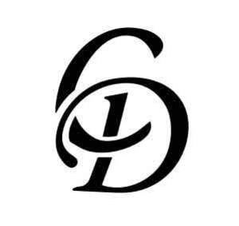

Trade Mark Journal No.2025/029 18 July 2025
UK00004207410 22 May 2025 (2,3,4,5,9,12,16,20,21,28,30,31)

- Class 2
- Stains as paint; Walnut stain; Corrosion resistant paint containing phenol; Wood stains; Stains (Wood -); Water repellent fungicidal wood stains; Flame resistant paint; Solvent free paint; Glass stains; Glue dye; Lime wash paint; Stains for leather; Leather (Stains for -); Leather stains; Corrosion resistant paint; Stains for use on leather; Paints for the prevention of rust; Dust proofing chemical preparations [paint]; Spray paint; Decorative spray coating; Spray coatings [paints]; Lacquering sprays; Spray coatings [varnishes]; Spray coatings [lacquers]; Spray coatings [anti-corrosives]; Powder coatings for application by spray; Reflective spray paints; Water repellent paints.
- Class 3
- Car polish; Vehicle tyre polish; Car wax; Car shampoos; Stain removers; Pet stain removers; Paint remover; Spot remover; Adhesive removers; Paint removers; Stain removing benzine; Glue removers; Make-up remover; Floor wax remover; Nail enamel remover; Rust removers; Varnish removers; Eye makeup remover; Nail polish remover pens; Nail-polish removers; Nail polish remover; Gel nail removers; Nail varnish remover [cosmetics]; Hair color removers; Nail varnish removers; Make-up removers; Floor wax removers; Lime removers; Colour removers for the hair; Hair colour removers; Nail enamel removers; Spirit gum remover; Nail polish removers; Stain removing agents; Stain removing preparations; Floor finish removers; Eye make-up removers; Cuticle removers; Pet odor removers; Lip stains [cosmetics]; Nail polish removers [cosmetics]; Spot removers [preparations]; Wrinkle resistant cream; Eye make up remover; Floor wax removers [scouring preparations]; Removers (Floor wax -) [scouring preparations]; Stain removing preparations for use on household goods; Salt crystal removers; Lip stains for cosmetic purposes; Wrinkle resistant creams [for cosmetic use]; Blemish balm creams; Wrinkle resistant creams; Car wax with a paint sealant; Spray polish; Cleaning compositions for spot removal; Cosmetic paste for application to the face to counteract glare; Glitter in spray form for use as a cosmetics; Hair permanent wave kit; Skin cleansers; Facial cleansers; Household cleansers; Acne cleansers, cosmetic; Skin cleansers [non-medicated]; Skin cleansers [cosmetic]; Cleansing lotions; Hand cleansers; Facial cleansers [cosmetic]; Exfoliants for the cleansing of the skin; Cleansing creams; Cleansing creams [cosmetic]; Non-medicated cleansing creams; Moisturizers; Softening cleanser [cosmetic]; Wipes impregnated with a skin cleanser; Skin cleansing lotion; Cleansers for household purposes; Skin moisturizers used as cosmetics; Skin cleansing foams; Exfoliant creams; Exfoliants; Skin cleaners [non-medicated]; Cloths impregnated with a skin cleanser; Moisturisers [cosmetics]; Cleansing gels; Skin moisturizers; Cleansing masks; Anti-aging moisturizers used as cosmetics; Skin cleansing cream [non-medicated]; Exfoliating creams; Tissues impregnated with a skin cleanser; Facial moisturizers; Creams (Soap -) for use in washing; Cleansing balm; Moisturising skin lotions [cosmetic]; Moisturising creams, lotions and gels; Moisturisers; Emollient shampoos; Skin cleansing cream; Skin fresheners [cosmetics]; Anti-aging moisturizers; Shampoos; Cosmetic creams and lotions; Moisturizing creams; Cleansing milks for skin care; Teeth cleaning lotions; Cosmetic moisturisers; Skin lotions; Lotions for the skin; Suncare lotions [for cosmetic use]; Cleansing products for the eyes; Detergents; Skin moisturizer masks; Moisturising skin creams [cosmetic]; Facial creams [cosmetics]; Cleansing cream; Skin moisturisers; Feminine hygiene cleansing towelettes; Skin whitening creams; Creams (Skin whitening -); Non-medicated skin lotions; After-sun oils [cosmetics]; Suncare lotions; Facial moisturisers [cosmetic]; Scented body lotions and creams; Non-medicated skin serums; Cleansing foam; Cosmetic nourishing creams; Skincare cosmetics; Exfoliants for the care of the skin; After-sun lotions [for cosmetic use]; Depilatory lotions; Facial lotions; Soap products; Cosmetic skin fresheners; Cream cleaners (Non-medicated -); Disposable wipes impregnated with cleansing compounds for use on the face; Skin soap; Cleansing mousse; Skin toners [cosmetic]; Skin balms [cosmetic]; Waterless shampoos; Non-medicated skin clarifying lotions; Pre-shave creams; Pre-moistened towelettes impregnated with a detergent for cleaning; Facial cleansing grains; Washing creams; Non-medicated shampoos; Cosmetic creams for dry skin; Moisturizing body lotions; Skin fresheners; Cosmetic soaps; Moisturising creams; Cosmetic creams for the skin; Skin creams [cosmetic]; Skin creams [for cosmetic use]; Skin creams [non-medicated]; Non-medicated skin creams; After-sun lotions; Cosmetic facial lotions; Facial lotions [cosmetic]; Hydrating creams for cosmetic use; Skin masks [cosmetics]; After-sun milks [cosmetics]; Facial soaps; Skin cleaning and freshening sprays; Non-medicated moisturisers; Aloe soaps; Make-up removing lotions; Skin recovery creams [cosmetics]; Facial wipes impregnated with cosmetics; Facial cleansing milk; Skin balms (Non-medicated -); Non-medicated skin balms; Non medicated skin toners; Loofah soaps; Skin moisturizer; Cleaner for cosmetic brushes; Fabric softener; Fabric softeners; Fabric softener for laundry; Fabric softeners for laundry; Fabric softener for laundry use; Fabric softeners for laundry use; Softeners (Fabric -) for laundry use; Fabric conditioners; Laundry fabric conditioner; Fabric brighteners; Liquid soap; Liquid soap for laundry; Liquid laundry detergents; Liquid dishwasher detergents; Dishwashing liquid; Liquid bath soap; Liquid soaps; Liquid soaps for laundry; Liquid soap for dish washing; Hair liquid; Time-release solid drain detergent; Liquid bath soaps; Soaps in liquid form; Scented fabric refresher spray; Pet shampoos; Non-medicated pet shampoos; Shampoos for pets; Pets (Shampoos for -); Shampoos for pets [non-medicated grooming preparations]; Age spot reducing creams; Age spot reducing creams for cosmetic use; Concealers for spots and blemishes; Patches containing sun screen and sun block for use on the skin; Cosmetic creams for firming skin around eyes; Chewable tooth cleaning preparations; Cosmetic patches containing sunscreen and sun block for use on the skin; Skin, eye and nail care preparations; Sun screen preparations; Foot smoothing stones; Disclosing tablets for personal use in indicating tartar on the teeth; Abrasive boards for use on fingernails; Shower and bath foam; Bath and shower foam; Bath foam; Foam bath; Bath lotion; Baby bubble bath; Bath foams; Foams for the bath; Baby bath mousse; Shower and bath gel; Bath and shower gel; Bath cream; Bath soap; Bath beads; Bath soaps; Bubble bath; Bath creams; Bath and shower oils [non-medicated]; Bath and shower gels; Bath and shower preparations; Shower and bath preparations; Preparations for use in the bath or shower; Preparations for the bath and shower; Bath powder; Bath gel; Foam bath preparations; Bath milk; Bath crystals; Bath foams (Non-medicated -); Bath salts; Bath pearls; Bath oils; Bath flakes; Liquid soap used in foot bath; Bath bombs; Bath herbs; Bath crystals (Non-medicated -); Bath lotions (Non-medicated -); Cosmetic preparations for bath and shower; Bath oil; Bath gels; Non-medicated bath salts; Bubble bath [for cosmetic use]; Bath creams (Non-medicated -); Bubble bath preparations; Bath pearls (Non-medicated -); Cosmetic bath salts; Bath powder [cosmetics]; Non-medicated bath oils; Bath oils (Non-medicated -); Baby wipes; Baby shampoo; Baby lotion; Baby lotions; Baby powder; Baby oils; Baby oil; Baby suncreams; Baby powders; Baby body milks; Baby bottom balm; Baby shampoo mousse; Shampoos for babies; Baby hair conditioner; Baby care products (Non-medicated -); Baby wipes impregnated with cleaning preparations.
- Class 4
- Fuel oil; Lubricating oil; Engine oil; Gas oil; Diesel oil; Emulsions of oil for use as a fuel; Heating oil; Fuel from crude oil; Motor oil; Linseed oil for use as a lubricant; Industrial fuel oil; Lubricating oil for motor vehicle engines; Fuels derived from oil; Demoulding oil; Dielectric oil for use in metalworking; Lamp oil; Gas oil for industrial heating; Colza oil for lubricating machinery; Crude oil; Gas oil for domestic heating; Oil well drilling lubricants; Lubricating oils for petrol engines; Moistening oil; Combustible oil; Non-chemical motor oil additives; Fuels derived from crude oil; Industrial oil; Gear oil; Lubricating oils being hydraulic oils; Mineral oil for use in the manufacture of metal cutting fluids; Mineral oil for use in the manufacture of paint; Mineral lubricating oils; Liquid petroleum gas; Textile oil; Lubricating oils for use as a cutting fluid; Engine oils; Automotive engine oils.
- Class 5
- Car deodorants; Car air freshener; Car air fresheners; Nappy changing mats, disposable, for babies; Diaper changing mats, disposable, for babies; Baby food; Baby foods; Baby diapers; Disposable baby diapers; Napkins for babies; Nappies as baby diapers; Food for babies; Triangular-shaped diapers [paper] for babies; Disposable pants of paper for holding a babies napkin in place; Paper diapers for babies; Diapers for babies; Nappies for babies; Food for babies and infants; Medicated baby oils; Powdered milk for babies and infants; Nappies of paper for babies; Paper nappies for babies; Medicated baby powders; Food preparations for babies and infants; Nappies for babies and incontinents; Nappies of cellulose for babies; Milk powder for babies; Disposable swim diapers for babies; Swim diapers, disposable, for babies; Swim nappies, disposable, for babies; Swim diapers, reusable, for babies; Powdered milk for babies; Swim nappies, reusable, for babies; Disposable diapers of paper for babies; Flea sprays; Anti-insect spray; Flea powders; Flea collars; Anti-insect sprays; Animal flea collars; Medicated mouth spray; Nasal spray for the treatment of allergies; Flea exterminating preparations; Dog washes [insecticides]; Anti-allergy sprays; Antibacterial sprays; Air deodoriser sprays; Medicated nasal spray preparations; Antiseptic sprays in aerosol form for use on the skin; Insecticidal animal shampoo; Decongestant nasal sprays; Animal washes [insecticides]; Deodorizing room sprays; Insect repellents; Repellents (Insect -); Mosquito repellents; Liquid bandage sprays; Insect repellent incense; Incense (Insect repellent -); Insect repellants; Deodorising room sprays; Anti-inflammatory sprays.
- Class 9
- Car charger; Car stereos; Car televisions; Car speakers; Car batteries; Car radios; Car aerials; Car videorecorders; Car antennas; Mobile phone ring holders; Ring holders for cell phones; Holders for cell phones; Hands-free holders for cell phones; Ring holders for mobile telephones; Chargers for cell phone; Cell phone covers; Cell phone straps; Mobile phone chargers; Mobile phone covers; Cell phone battery chargers; Mobile phone ring stands; Mobile phone straps; Mobile phone battery chargers; Phone plugs; Holders adapted for cell phones and smartphones; Mobile phone screen protectors; Cell phone cases; Mobile phone speakers; Holders adapted for mobile phones; Mobile phone cases; Cell phone battery chargers for use in vehicles; Mobile telephone covers; Phone extension jacks; In-car telephone handset cradles; Mobile telephone batteries; Ring stands for cell phones; Phone cases; Lanyards for cell phones; Hands-free headsets for cell phones; Holders adapted for mobile telephones and smartphones; Cell phones; Hands-free microphones for cell phones; Screen protectors for cell phones; Mobile phone connectors for vehicles; Straps for telephone handsets; Desk or car mounted units incorporating a loudspeaker to allow a telephone handset to be used hands-free; Battery chargers for mobile phones; Hands-free kits for cell phones; Flip covers for mobile phones; Anti-dust plugs for cell phones; Chargers for mobile phones; Mobile telephone cases; Mobile phone docking stations; Flip covers for cellular phones; Mobile phone display screen protectors in the nature of films; Dashboard mats adapted for holding mobile telephones and smartphones; Phone extension leads; Ring stands for mobile telephones; Telephone credit cards; Smartphone battery chargers; Mobile phones; Dashboard mounts for mobile phones; Holders for contact lenses; Downloadable ring tones for cell phones; Chargers for mobile telephones; Straps for mobile phones; Protective covers for cell phones; Screen protectors for mobile telephones; Telephone adapters; Dustproof plugs for jacks of mobile phones; Gender changers [cable adapters] for cell phones; Credit card cases [fitted holders]; Batteries for mobile phones; Straps for cellular phones; Lanyards for mobile telephones; Devices for hands-free use of mobile phones; Downloadable smart phone application software; Cellular phones; Earphones for cellular telephones; Carrying cases for cell phones; VOIP phones.
- Class 12
- Motor car seats; Convertible car seats; Motor car windows; Motor car convertible tops; Motor car doors; Rear car windows; Car seat covers; Vehicle windscreens; Bumpers (Vehicle -); Vehicle windshields; Automobile bumpers; Car seat tidies; Wheel tires (Vehicle -); Windscreen wipers for motor cars; Automobile wheels; Wheel rims for motor cars; Automobile chassis; Chassis (Automobile -); Vehicle windows; Motor car derived vans; Car seat canopies; Car boot lids; Car creepers for use in inspecting the underneath of cars; Car seat harnesses; Vehicle wheel tyres; Vehicle cabs; Children's car seats; Vehicle wheels; Windows for vehicle windshields; Vehicle wheel rims; Petrol tank caps for motor cars; Seats (Vehicle -); Windshield visors [vehicle parts]; Tyres for motor vehicle wheels; Automobile tyres; Automobile tires; Vehicle tires; Hub centre caps; Hub caps; Hub caps for wheels; Hub cap covers; Ornamental hub caps for vehicles; Rear hubs; Wheel hubs; Cycle hubs; Caps for wheel rims; Bands for wheel hubs; Wheel hubs (Bands for -); Spoke caps for bicycle wheels; Bicycle hubs; Bicycle wheel hubs; Vehicle tire valve stem caps; Front end hubs for vehicles; Wheel hubs for bicycles; Hubs for bicycle wheels; Wheel hubs (Vehicle -); Vehicle wheel hubs; Hubs for bicycles; Wheel hubs (Vehicles -); Wheel hubs for vehicles; Hubs for motorcycle wheels; Hubs for vehicle wheels; Vehicle wheels (Hubs for -); Automobile wheel hubs; Wheel hubs for motorcycles; Tyres (Flanges of railway wheel -); Flanges of railway wheel tyres; Flanges for railway wheel tyres; Hubs for automobile wheels; Wheel hubs for automobiles; Tire retreading caps; Petrol caps for vehicles; Vehicle bumpers; Car seats; Coverings for car seats; Bonnets for vehicle engine; Bumpers for vehicles; Sun visors being parts of vehicle bodywork; Vehicle bonnet pins; Ornamental wheel shields for vehicles; Vehicle hoods; Hoods (Vehicle -); Seats for automotive vehicles; Wipers for car head lamps; Radiator grilles for vehicles; Windscreens for motor cars; Vehicle hood pins; Cars; Automobile windshield sunshades; Fenders [land vehicle parts]; Wheels (Vehicle -); Bodywork (Vehicle -); Automobile windshields [windscreens]; Horns for motor cars; Windshield wipers [vehicle parts]; Underbodies of vehicle; Hoods for vehicle engines; Automobile hoods; Windshields for vehicles; Passenger cars; Car transporters; Convertible roofs being parts of cars; Windows for vehicle windscreens; Ornamental wheel covers for vehicles; Mudguards for vehicles; Upholstery for vehicles; Upholstery for vehicle seats; Wheel rims for vehicles; Vehicle wheel tires; Bodywork parts for vehicles; Steering wheels [vehicle parts]; Vehicle seats; Hubs for vehicle wheels (motorcycles); Rims for vehicle wheels; Tires for vehicle wheels; Motor vehicle horns; Vehicle sunroofs; Bumpers for automobiles; Windscreens for vehicles; Fitted vehicle covers for automobiles; Ashtrays for vehicles; Sun visors [vehicle parts]; Luggage racks for motor cars; Tyres for vehicle wheels; Wheel tyres (Vehicle -); Passenger motor cars; Golf cars [vehicles]; Hood shields as structural parts of vehicles; Fenders for land vehicles; Crown wheels being parts of land vehicles; Vehicle tyres; Safety belts for vehicles for motor cars; Windshields [land vehicle parts]; Wheels for vehicles; Automotive vehicles; Trim panels for vehicle bodies; Valves for vehicle tires; Car seat covers [shaped or fitted]; Cable car cabins; Vehicle chassis; Chassis (Vehicle -); Head rests for seats for motor cars; Baby strollers; Baby carriages; Baby, infant and child seats for vehicles; Covers for baby strollers; Baby carriages [prams]; Prams [baby carriages]; Canopies for baby strollers; Baby carriages (Covers for -); Covers for baby carriages; Baby carriage canopies; Perambulators for babies; Hoods for baby carriages; Rubber baby buggy bumpers; Carriages for babies; Fitted footmuffs for baby carriages.
- Class 16
- Car stickers; Decorative stickers for cars; Vehicle bumper stickers; Paper pads for changing diapers; Picture framing mat boards; Table place setting mats paper; Table place setting mats of card; Table place setting mats of cardboard; Table mats of paper; Paper table mats; Place mats of paper; Paper place mats; Table mats of card; Place mats made of paper; Table mats of cardboard; Desk mats; Drip mats of card; Drip mats of paper; Patterns for making clothes; Coin mats; Felt mats for calligraphy; Paper pet crate mats; Cocktail mats of paper; Towels of paper for removing make-up; Face cloths made of paper; Dinner mats of paper; Beer mats of paper; Dinner mats of cardboard; Scoops made of card for the disposal of pet excrement; Plastic bags for pet waste disposal; Cat box liners in the form of plastic bags; Plastic bags for disposing of pet waste; Toilet rolls; Toilet paper in roll form; Paper toilet bowl liners; Paper toilet seat covers; Toilet paper; Bamboo rolls used as writing brush holders; Toilet tissue; Toilet tissue made of paper; Kitchen rolls [paper]; Toilet tissues of paper; Paper clip holders; Toilet tissues; Lavatory paper; Liners of paper for toilet trays for domestic animals; Plastic film roll stock for packaging; Pencil holders; Liners of paper for toilet boxes for domestic animals; Plastic film roll stock for packaging food; Liners of plastic for toilet trays for domestic animals; Badge holders of plastic [office requisites]; Magnetic paint brush holder clips; Retractable reels for name badge holders [office requisites]; Stapler holders; Automatic adhesive tape dispensers for office use; Automatic adhesive dispensers for office use; Clips for name badge holders [office requisites]; Automatic paper clip dispensing machines for office or stationery use; Paste board; Erasers (Writing board -); Writing board erasers; Drawing board pins; Paper board; Corrugated board; Drawing boards; Sketching boards; Chalk boards; Wood pulp board [stationery]; Manila board; Scratch pads; Cartons made from corrugated board; Mounting boards; Liners of plastic for toilet boxes for domestic animals; Cardboard boxes; Boxes of cardboard; Cardboard cake boxes; Hat boxes of cardboard; Cardboard gift boxes; Packaging boxes of cardboard; Cardboard pizza boxes; Collapsible cardboard boxes; Boxes of paper or cardboard; Boxes of cardboard or paper; Pen boxes; Cardboard household storage boxes; Cardboard packaging boxes in collapsible form; Packaging boxes of paper; Paper boxes; Boxes of paper; Box files; Collapsible boxes of paper; Hat boxes of paper; Display boxes of cardboard; Pencil boxes; Corrugated cardboard boxes; Writing paper holders; Paper handtowels; Paper; Paper towels; Towels of paper; Paper napkins; Napkins of paper; Paper hand-towels; Napkin paper; Serviettes of paper; Paper serviettes; Paper stock [printing paper]; Paper knives being parts of paper cutters for office use; Paper bags; Bags of paper; Paper staplers; Staplers for paper; Pen holders; Paper and cardboard; Hand towels of paper; Paper hand towels; Paper cutters; Clips for paper [stationery]; Kitchen paper; Paper washcloths; Paper stationery; Bibs of paper; Paper bibs; Tissue paper for making stencil paper; Holders for notepads; Napkins of paper (Table -); Table napkins of paper; Paper table napkins; Paper handkerchiefs; Handkerchiefs of paper; Face towels of paper; Paper face towels; Paper wipes; Stencil paper [mimeograph paper]; Paper coasters; Coasters of paper; Greaseproof paper; Hygienic paper; Hygienic hand towels of paper; Paper doilies; Bottle wrappers of cardboard or paper; Bottle wrappers of paper or cardboard; Paper clips; Pads of paper; Paper pads; Pen and pencil holders; Pen or pencil holders; Paper cutters for office use; Coin wrappers of paper; Paper containers; Paper bags for household use; Oiled paper for paper umbrellas (kasa-gami); Tablemats of paper; Scented paper drawer liners; Cloth paper; Paper sheets [stationery]; Paper stock; Newsprint paper; Paper clasps; Paper fasteners; Shelf paper; Tissue paper; Cutters (Paper -) [office requisites]; Napkins made of paper for household use; Paper cutters [office requisites]; Paper party bags.
- Class 20
- Reusable baby changing mats; Nappy changing tables; Baby changing tables; Diaper changing stations; Wall-mounted diaper [napkin] changing platforms; Wall-mounted diaper (napkin) changing platforms; Baby changing platforms; Wall-mounted baby changing platforms; Changing tables for babies; Furniture for changing rooms; Sleeping mats; Sleeping mats of bamboo or straw; Children's mats used for sleeping; Dog beds; Cat beds; Dog kennels; Inflatable pet beds; Bed mattresses; Bed slats; Air bed lounger; Dog baskets; Bed chairs; Sofa beds; Beds for pets; Bed rails; Dog houses [kennels]; Bedding for cots [other than bed linen]; Bed heads; Bedding for nursery cots [other than bed linen]; Pet cushions; Cushions (Pet -); Portable beds for pets; Bunk beds; Bumper guards for cots, other than bed linen; Infant beds; Beds for household pets; Chair beds; Bed bases; Bed frames; Animal housing and beds; Bumper guards for cribs, other than bed linen; Divan beds; Beds for animals; Pet furniture; Pet crates; Bath pillows; Portable infant beds; Beds; Beach beds; Sleeping mats for camping [mattresses]; Non-metal dog tags; Dog tags, not of metal; Mats for infant playpens; Infant playpens (Mats for -); Playpens (Mats for infant -); Cushions for lining pet crates; Dispensers, not of metal, for dog waste bags; Cat baskets; Pet houses; Pet grooming tables; Dispensers for dog waste bags, fixed, not of metal; Shelves for sale in kit form; Barrels (Non-metallic -) for the identification of pet animals; Scratching posts for cats; Cat trees; Pin boards [notice boards] of cork; Letter boards [blank display boards]; Cat flaps of non-metallic materials; Portable baby bath seats for use in bath tubs; Bath kneeling pads; Pillows; Scented pillows; Bath seats; Beds, bedding, mattresses, pillows and cushions; Neck pillows; Bath seats for babies; Nursing pillows; Nap mats [cushions or mattresses]; Stuffed pillows; Inflatable pillows; Kennels for household pets; Collars, not of metal, for fastening pipes; Nesting boxes for pets; Nesting boxes for household pets; Household pets (Nesting boxes for -); Nesting boxes for animals; Toy boxes [furniture]; Plastic boxes; Box shelves; Animal carriers in the form of boxes; Nesting boxes; Boxes (Nesting -); Wooden boxes; Letter boxes of plastic; Toy boxes [chests]; Toy boxes and chests; Boxes (packaging -) in flat form [plastic]; Baby walkers; Electric baby cradles; Baby gates; Baby bolsters; Cribs for babies; Cots for babies; Playpens for babies; Furniture for babies.
- Class 21
- Toilet holder ; Toilet roll holders; Toilet roll stands; Holders for toilet paper; Toilet paper holders; Holders (Toilet paper -); Toilet tissue holders; Toilet brush holders; Dispensers for the storage of toilet paper [other than fixed]; Bathroom glass holder; Towel holders; Toilet plungers; Toilet paper racks; Kitchen paper holders; Paper towel dispensers; Fitted toilet bags; Toilet brushes; Sponges for toilet use; Toilet brush sets; Napkin holders; Plastic bag holders for household use; Toilet potties; Paper hand towel dispensers; Toothbrush holders; Toilet and bathroom cleaning utensils ; Serviette holders; Water closet brush holders; Dispensers for paper wipes [other than fixed]; Holders for towels; Sponge holders; Dispensers for paper towels; Kitchen paper dispensers; Hand towel dispensers, other than fixed; Shower gel holders; Plastic egg holders for domestic use; Napkin dispensers for household use; Plastic juice box holders; Napkin dispensers; Table napkin holders; Toilet cases; Dispensers for paper hand towels; Serviette dispensers; Juice box holders made of plastic; Insulating sleeve holder for beverage cups; Cosmetic and toilet utensils; Brush holders; Dog food scoops; Food containers for pet animals; Pet feeding dishes; Household containers for storing pet food; Pet feeding bowls; Containers for bird food; Pet feeding and drinking bowls; Pet drinking bowls; Litter scoops for use with pet animals; Litter trays for pet animals; Tea cups; Cake tins; Tea balls; Cake trays; Porcelain cake decorations; Tea infusers; Tea pots; Tea canisters; Tea caddies; Cake moulds; Cupcake baking cups; Drip mats for tea; Cake molds; Cake rings; Cake pans; Cake domes; Tea strainers; Goldfish bowls; Pet feeding bowls, automatic; Bowls; Glass goldfish bowls; Soup bowls; Glass bowls for live goldfish; Fish bowls; Salad bowls; Finger bowls; Flower bowls; Bowls for candy; Raccoon dog hair for brushes; Cat litter pans; Mixing bowls; Fruit bowls; Pet paw cleaners, non-electric; Pet lick mats; Shaving bowls; Suction bowls; Glass bowls; Bowls (Glass -); Bowls for nuts; Sugar bowls; Serving bowls (hachi); Serving bowls [hachi]; Japanese-style soup bowls [wan]; Fruit bowls of glass; Cat litter boxes; Shallow bowls; Serving bowls; Brushes for grooming pet animals; Pet grooming glove; Animal-activated pet feeders; Electric pet brushes; Wire cages for household pets; Pet treat jars; Electronic pet feeders; De-shedding combs for pets; Cages for household pets; Pets (Cages for household -); Deshedding brushes for pets; Non-mechanized pet waterers in the nature of portable water and fluid dispensers for pets; Cages for pets; Litter boxes for pets; Lavatory brush stands; Napkin holders, not of precious metal; Floating drink holders; Foam drink holders; Fitted holders for wiping, drying, polishing and cleaning paper; Floor wax applicators mountable on a mop handle; Inflatable drink holders; Itch scratchers; Filters for use in cat litter pans; Ironing board covers; Kitchen cutting boards; Cutting boards for the kitchen; Back scratchers; Kitchen boards for chopping; Chopping boards; Wooden chopping boards for kitchen use; Ironing board covers, shaped; Cutting boards; Chopping boards for kitchen use; Knife boards; Carving boards; Scalp scratchers; Ironing boards; Boards (Ironing -); Carving boards for kitchen use; Coffee stirrers; Coffee mugs; Non-electric coffee drippers for brewing coffee; Coffee pots; Coffee grinders; Coffee cups; Beverage stirrers; Stirrers (Drink -); Coffee scoops; Hand-operated coffee grinders; Coffee grinders, hand-operated; Stirrers; Vacuum coffee makers; Vacuum coffee bean containers; Coffee pots [non-electric]; Non-electric coffee pots; Non-electrical coffee grinders; Non-electric coffee frothers; Coffee percolators, non-electric; Non-electric coffee percolators; Percolators (Coffee -), non-electric; Honey stirrers; Cocktail stirrers; Coffee services of ceramic; Coffee filters not of paper being part of non-electric coffee makers; Coffee filters, not of paper, being part of non-electric coffee makers; Non-electric plunger style coffee makers; Non-electric vacuum coffee makers; Coffee makers, non-electric; Coffee brewers (Non-electric -); Automatic litter boxes for pets; Litter boxes [trays] for pets; Pets (Litter boxes [trays] for -); Litter bins; Trays (Litter -) for pets; Litter trays for pets; Litter trays; Litter bins of metal; Litter baskets; Plastics trays for use as litter trays for cats; Litter trays for birds; Litter baskets of metal; Boxes for biscuits; Bento boxes; Ceramic tissue box covers; Window boxes; Boxes of porcelain; Tissue box covers; Fur brushes for animals; Deshedding combs for pets; Storage jars; Food storage containers; Storage tins; Laundry baskets; Wastepaper baskets; Waste baskets; Glass storage jars; Baby bathtubs; Baby baths; Baby baths, portable; Baths (Baby -), portable; Portable baby baths; Baby finger toothbrushes; Baby bath tubs; Stands for portable baby baths; Foldable bath tubs for babies; Inflatable bath tubs for babies; Stir-fry pans; Woks; Frying pan lids; Frying pans; Pans (Frying -); Skillets; Skewers (cooking utensil); Egg frying pans; Simmer rings [cooking utensils]; Cooking pans; Flat cooking ladles; Pancake frying pans; Pan scrapers; Griddles [cooking utensils]; Non-electric woks; Skewers for use in cooking; Cooking skewers; Frying pans [non-electric]; Non-electric frying pans; Vegetable tongs; Fragrant oil burners; Shallow pans for cooking; Cookware; Cooking skewers of metal; Cooking pots for use in microwave ovens; Basting spoons [cooking utensils]; Non-electric rice cooking pots; Grills [cooking utensils]; Cookware for use in microwave ovens; Cookware [pots and pans]; Rice cookers for use in microwave ovens; Non-electric pressure cooking saucepans; Pressure cooking saucepans, non-electric; Japanese rice bowls (chawan); Japanese rice bowls [chawan]; Saucepans; Cooking pots; Barbecue tongs; Cooking pans [non-electric]; Non-electric cooking pans; Cooking pot sets; Cooking pots and pans [non-electric]; Non-electric cooking pots and pans; Saucepans (Earthenware -); Earthenware saucepans; Non-electric griddles [cooking utensils]; Griddles [non-electric cooking utensils]; Cooking skewers, not of metal; Skewers [cooking implements]; Cooking utensils; Non-electric Japanese cast iron kettles [tetsubin]; Shamoji [Japanese-style scoops for cooked rice]; Japanese cast iron kettles, non-electric (tetsubin); Saucepan scourers of metal; Steamers [cookware]; Meat tongs; Cooking utensils for barbecue use; Asparagus tongs; Paper cups; Plates (Paper -); Paper plates; Cups of paper or plastic; Soap holders; Pizza peels; Pizza stones; Roller tubes for peeling garlic; Pizza tray stands; Oven gloves; Fish slices.
- Class 28
- Racing car games; Dog toys; Toy dogs; Snuffle mats being dog toys; Toys for dogs; Bowls bags; Imitation bones being toys for dogs; Bowls [games]; Toy candy bowl mechanical dispensers; Playing bowls; Pet toys made of rope; Dart mats; Golf mats; Pet toys; Toys being for sale in kit form; Toys sold in kit form; Craft toys sold in kit form; Toys for pet animals; Toy model kit cars; Toy model kits; Toy model hobbycraft kits; Toy fingerprinting kits; Toy model hobby craft kits; Pet toys containing catnip; Plastic model kits for making toy vehicles; Toy construction kits; Kits of parts [sold complete] for making toy model cars; Kits of parts [sold complete] for making toy models; Scale model kits [toys]; Craft model kits; Toys and playthings for pet animals; Model craft kits of toy figures; Toys for pets; Miniature replica football kits; Toys for domestic pets; Dart board cabinets; Sail board leashes; Dart board overlays; Toys for cats; Dart boards; Board games; Electronic board games; Sail board foot restraints; Chess boards; Sail board foot straps; Sugoroku board games; Question sets for board games; Toy balls; Bocce balls; Golf balls; Golf ball retrievers; Playground balls; Soccer balls; Bowling balls; Tennis balls; Exercise balls; Tether balls; Rubber balls; Tennis ball retrievers; Beach balls; Billiard balls; Paddle balls; Balls for playing bowls; Softball balls; Baseball balls; Punching balls; Inflatable beach balls; Polo balls; Soft tennis balls; Table-tennis balls; Cricket balls; Ball launchers for pets; Gym balls; Lacrosse balls; Petanque balls; Bendy balls being toys; Sport balls; Squash balls; Balls for play; Racketball balls; Volley balls; Balls for playing bocce; Balls for juggling; Inflatable balls for sports; Bandy balls; Balls for sports; Bladders of balls for games; Sports balls; Bags adapted for bowling balls; Playing balls; Medicine balls; Balls for playing paddleball; Grip balls in the nature of rubber ball for hand exercise; Futsal balls; Soccer ball bags; Balls for games; Games (Balls for -); Ball catchers; Rugby balls; Tennis balls [not soft]; Balls for playing dodgeball; Punching balls for boxing; Billiard tally balls; Lacrosse ball bags; Cases for tennis balls; Water polo balls; Tennis ball throwing machines; Floorball balls; Table tennis balls; Balls for playing petanque; Balls for playing lacrosse; Balls for playing handball; Balls for racket sports; Gym balls for yoga; Billiard ball triangles; Balls for playing racketball; Platform tennis balls; Golf ball markers; Tennis ball throwing apparatus; Puzzle mats [toys]; Baby rattles; Baby playthings; Baby swings; Baby gyms; Toys for babies; Infant toys; Baby rattles incorporating teething rings.
- Class 30
- Tea cakes; Tea; Chocolate cake; Tea (Iced -); Breakfast cake; Iced cakes; Chocolate cakes; Iced fruit cakes; Iced sponge cakes; Oolong tea [Chinese tea]; Rice cake snacks; Chai tea; Cakes; Cream cakes; Icing for cakes; Ginger tea; Oolong tea; Fruit cake snacks; Candy cake; Chamomile tea; Chocolate decorations for cakes; Cake powder; Fruit cakes; Lime tea; Rosemary tea; Jasmine tea; Cake frosting [icing]; Frosting [icing] (Cake -); Cake flour; Citron tea; Darjeeling tea; Tieguanyin tea; Deep chocolate cake made with chocolate sponge; Rice cakes; Cakes (Rice -); White tea; Tea beverages with milk; Yellow tea; Cupcakes; Shortbread biscuits; Cake Pops; Toffee; Candy with caramel; Caramels [candy]; Chocolate for confectionery and bread; Chocolate drink preparations flavoured with toffee; Chocolate confectionery having a praline flavour; Chocolate coated marshmallow biscuits containing toffee; Chocolate confectionary; Caramel; Peanut butter confectionery chips; Chocolate confectionery; Sugar candy [for food]; Candy with cocoa; Honeycomb toffee; Chocolate fudge; Caramel popcorn; Chocolate candies; Caramels [sweets]; Caramels [candies]; Chocolate caramel wafers; Sweets (candy), candy bars and chewing gum; Dairy chocolate; Chocolate-coated sugar confectionery; Chocolate flavoured confectionery; Non-medicated confectionery having toffee fillings; Caramels; Chocolate marzipan; Chocolate candy with fillings; Malt coffee; Sweets [candy]; Candies [sweets]; Candy; Sweets; Sweetmeats [candy]; Candy [sugar]; Sugar-free sweets; Candies; Sweetmeats being candies; Peppermint sweets; Sweets (Peppermint -); Gum sweets; Sweetmeats [candy] being flavoured with fruit; Sugarless sweets; Candy mints; Peppermint candy; Candy decorations for cakes; Sugarfree sweets; Non-medicated confectionery candy; Lollipops [confectionery]; Sweets (Non-medicated -) being acidulated caramel sweets; Candy coated confections; Candy cake decorations; Candy canes; Sweetmeats [candy] containing fruit; Fruit jelly candy; Sugarless candies; Gummy candies; Ice candy; Candy bars; Chewing candy; Sweets (Non-medicated -) in the nature of sugar confectionery; Corn candy; Sugar candies (Non-medicated -); Candy coated popcorn; Cotton candy; Ginseng candy; Gum sweets (Non-medicated -); Sugar-free mint candies; Foamed sugar sweets; Chocolate decorations for confectionery items; Chocolate confections; Sugar confectionery; Non-medicated candy; Candy (Non-medicated -); Ice candies; Candy coated apples; Sesame candy bars; Cake decorations made of candy; Boiled sweets; Starch-based candies; Sweets (Non-medicated -) in the nature of chocolate eclairs; Peppermint sweets [other than for medicinal use]; Non-medicated sweets; Sweets (Non-medicated -); Sherbet [confectionery]; Xylitol-sweetened sweets; Chocolate desserts; Milk tablet candy; Gelatin-based chewy candies; Hard caramels [candies]; Confectionery items coated with chocolate; Flavoured sugar confectionery; Sweets (Non-medicated -) in the nature of toffees; Chocolate confectionery containing pralines; Peppermint for confectionery; Mints [candies, non-medicated]; Chewing sweets (Non-medicated -); Sweets (Non-medicated -) in the nature of caramels; Fruit confectionery; Fruit jellies [confectionery]; Jellies (Fruit -) [confectionery]; Hard candy; Ice confectionery in the form of lollipops; Chocolate confectionery products; Confectionery chocolate products; Mint flavoured sweets (Non-medicated -); Marshmallow confectionery; Candies (Non-medicated -); Candies (Non-medicated -) with alcohol; Boiled sugar confectionery; Non-medicated chocolate confectionery; Liquorice [confectionery]; Confectionery; Sherbets [confectionery]; Chocolate pastries; Sweets (Non-medicated -) in the nature of fudge; Pastilles [confectionery]; Mint-based sweets; Chewing sweets (Non-medicated -) having liquid fruit fillings; Chocolate syrups; Confectionery made of sugar; Candies (Non-medicated -) with honey; Non-medicated sugar confectionery; Sugar confectionery (Non-medicated -); Chocolate beverages; Candies (Non-medicated -) with mint; Crystal sugar pieces [confectionery]; Sweets (Non-medicated -) in the nature of nougat; Peanut confectionery; Red ginseng candy; Chocolates; Prepared desserts [confectionery]; Truffles [confectionery]; Confectionery items formed from chocolate; Fruit drops [confectionery]; Confectionery chips for baking; Truffles (rum -) [confectionery]; Panned sweets (Non-medicated -); Chocolate flavoured beverages; Wafer biscuits; Wafers; Salted wafer biscuits; Bean-jam filled wafers (monaka); Wafer dough; Chocolate wafers; Chocolate covered wafer biscuits; Wafers [biscuits]; Wafers [food]; Wafer doughs; Flan base wafers; Edible wafers; Edible paper wafers; Rolled wafers [biscuits]; Biscuits having a chocolate coating; Sweet bean jam coated with sugared-bean based soft shell [nerikiri]; Petit-beurre biscuits; Biscuits having a chocolate flavoured coating; Shortbread with a chocolate coating; Chocolate coating; Chocolate chips; Pastry shells for monaka; Adlay flour for food; Pecan logs; Acanthopanax tea (Ogapicha); Treacles; Mixes of sweet adzuki-bean jelly [mizu-yokan-no-moto]; Taffy; Salted butter fudge; Salted butter caramel; Salt for popcorn; Ice confections; Caramel coated popcorn; Caramel-coated popcorn; Ice cream confections; Flavored jelly crystals for making jelly confectionery; Caramel coated popcorn with candied nuts; Creme caramels; Sugar-coated hard caramels; Soft caramels; Flavoured jelly crystals for making jelly confectionery; Filled caramels; Pretzels; Candy-coated popcorn; Stick liquorice [confectionery]; Fruit flavoured water ices in the form of lollipops; Ice lollies; Fudge; Ice confectionery; Licorice; Ice cream confectionery; Salty biscuits; Mixtures for making ice cream confections; Butterscotch chips; Pralines; Flavoured popcorn; Liquorice flavoured confectionery; Lollipops; Sal ammoniac liquorice sweets (Non-medicated -); Bubble gum [confectionery]; Ice creams flavoured with chocolate; Ice lollies being milk flavoured; Bars of sweet jellied bean paste (Yohkan); Mousse confections; Salted biscuits; Molasses syrup; Ice-cream; Shortbread with a chocolate flavoured coating; Chocolate syrup; Seaweed flavoured corn chips; Cones for icecream; Halvah; Sugarless chewing gum; Chocolate shells; Starch-based candies (ame); Cones for ice cream; Ice cream cones; Sugar-free chewing gum; Coffee; Mixtures of malt coffee with coffee; Iced coffee; Drip bag coffee; Mixtures of malt coffee extracts with coffee; Mixtures of coffee; Coffee mixtures; Decaffeinated coffee; Coffee drinks; Coffee beverages; Chocolate coffee; Coffee extracts for use as substitutes for coffee; Coffee beverages with milk; Coffee pods; Coffee substitutes [artificial coffee or vegetable preparations for use as coffee]; Coffee beans; Mixtures of coffee and chicory; Aerated drinks [with coffee, cocoa or chocolate base]; Powdered coffee in drip bags; Aerated beverages [with coffee, cocoa or chocolate base]; Flavoured coffee; Coffee flavorings; Coffee essences for use as substitutes for coffee; Coffee flavourings; Beverages with coffee base; Beverages with a coffee base; Mixtures of malt coffee with cocoa; Mixtures of coffee and malt; Coffee extracts; Mixtures of coffee essences and coffee extracts; Coffee capsules; Coffee bags; Caffeine-free coffee; Cappuccino; Coffee oils; Ice beverages with a coffee base; Espresso; Freeze-dried coffee; Coffee (Unroasted -); Unroasted coffee; Beverages made from coffee; Beverages made of coffee; Instant coffee; Prepared coffee and coffee-based beverages; Chicory [coffee substitute]; Prepared coffee beverages; Malt coffee extracts; Coffee [roasted, powdered, granulated, or in drinks]; Chicory for use as substitutes for coffee; Roasted coffee beans; Ground coffee; Sugar-coated coffee beans; Coffee concentrates; Coffee based drinks; Coffee in whole-bean form; Coffee in brewed form; Substitutes (Coffee -); Coffee substitutes; Chicory mixtures for use as substitutes for coffee; Coffee based beverages; Ground coffee beans; Mixtures of chicory for use as coffee substitutes; Mixtures of chicory for use as substitutes for coffee; Coffee, teas and cocoa and substitutes therefor; Unroasted coffee beans; Coffee essences.
- Class 31
- Dog food; Food for dogs; Pet food for dogs; Pet food; Food (Pet -); Cat food; Dog foods; Pet rabbit food; Food for cats; Food for racing dogs; Animal food; Pet food for birds; Food preparations for dogs; Rabbit food; Food for animals; Hamster food; Food for goldfish; Foodstuff for dogs; Pet foods; Dog biscuits; Biscuits (Dog -); Bird food; Foodstuffs for dogs; Food for hamsters; Dog treats [edible]; Edible dog treats; Food preparations for cats; Canned foods for dogs; Pet foodstuffs; Foods flavoured with chicken for feeding dogs; Stall food for animals; Edible food for animals for chewing; Cattle food; Fish food; Food for fish; Foods flavoured with beef for feeding dogs; Foods containing chicken for feeding dogs; Food for rodents; Foodstuffs for pet animals; Oat-based food for animals; Beverages for dogs; Foods containing beef for feeding dogs; Food for birds; Dogs; Pet beverages; Milk for use as foodstuffs for dogs; Food products for animals; Wheat proteins for animal food; Pet foods in the form of chews; Biscuits for dogs; Foods containing liver for feeding dogs; Foods flavoured with beef for feeding cats; Fish meal [animal feed]; Pet animals; Meal for animals; Foods flavoured with liver for feeding cats; Cereals preparations being food for animals; Foods containing beef for feeding cats; Foods containing chicken for feeding cats; Cat litter; Animal litter for cats; Cat litters; Cats; Litter for cats; Cat biscuits; Kitty litter; Cat litter and litter for small animals; Edible silvervine powder for pet cats; Litter for dogs; Foodstuffs for cats; Pet birds; Animal litter; Cat treats [edible]; Foods flavoured with chicken for feeding cats; Canned foodstuffs for cats; Foods containing liver for feeding cats; Litter for animals; Bark for use as animal litter; Beverages for cats; Abrasive liners for cat litter pans; Woodshavings for use as animal litter; Foods in the form of rings for feeding to cats; Bedding and litter for animals; Powdered milk for kittens; Foods flavoured with liver for feeding dogs; Edible pet treats; Powdered milk for pets; Sand for pet toilets; Litter peat; Peat (Litter -); Litter for birds; Straw litter; Peat litter for animals; Pets (Aromatic sand for -) [litter]; Aromatic sand for pets [litter]; Aromatic sand [litter] for pets; Small animal litter; Sanded paper for pets [litter]; Pets (Sanded paper for -) [litter]; Sanded paper [litter] for pets; Litter for small animals; Litter for domestic animals; Wood shavings for use as animal litter; Sanded paper for domestic animals (litter); Bark-based products for use as animal litter; Fuller's earth for use as animal litter; Animal litter made from hydrated calcium silicate; Gravel paper for bird cages; Biscuits for puppies; Foodstuffs for puppies; Algarovilla for animal consumption; Chewing bones for dogs; Bones for dogs; Live black-bone chickens; Foods in the form of rings for feeding to dogs; Edible chews for dogs; Digestible chewing bones for dogs; Animal biscuits; Goldfish; Sanded paper for use in animal cages; Grass; Grass seed; Grass seeds; Seeds pre-sown in matted fibrous propagation media for grassing lawns; Seed (Mats containing -) for laying lawns; Seeds pre-sown in matted fibrous propagation media for grassing golf courses; Seeds pre-sown in matted fibrous propagation media for grassing sports fields; Seeds pre-sown in matted fibrous propagation media for grassing tracks; Seeds pre-sown in matted fibrous propagation media for grassing paths.
Click & Deliver UK LTD